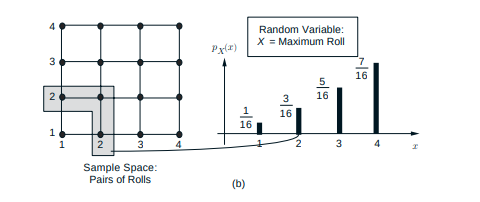

Función másica de probabilidad

La manera más importante de caracterizar una variable aleatoria es a
través de la probabilidad de los valores que puede tomar. Para una
variable aleatoria discreta X, estas probabilidades están dadas por
la Función másica de probabilidad de X, esta se denota como pX, en particular si x es cualquier valor de
X, La masa de probabilidad de x se denota como pX(x) la cual es la
probabilidad del evento {X =x}.
Otras paginas
Tienda de libros
|
Item
|
Nombre
|
Precio
|
| 2 |
Bertsekas, Introduction to probability |
$150.000 |
| 4 |
Strang, Introduction to linear algebra |
$250.000 |
| 4 |
Castro, Teoria de la computación |
$50.000 |
Horario(Hecho en clase)
|
Hora
|
Lunes
|
Martes
|
| 7:00 AM |
Desayuno |
| 8:00 AM |
Reunion |
Clase |